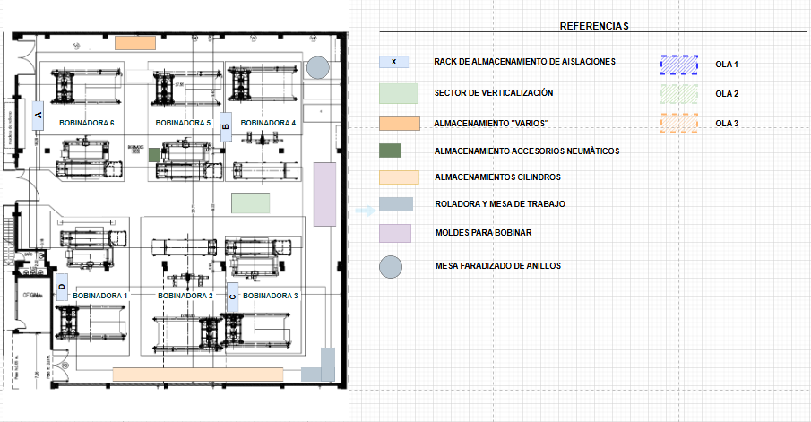

Puntaje de Mantenimiento 5S (Shitsuke)
Comparativa BASELINE vs. Último Puntaje
Eficiencia y Acción
TMRD (Tiempo Medio de Respuesta)
-- h
Promedio de cierre de desvíos
Ideas Kaizen Activas
--
Ideas de mejora abiertas
Desvíos (Último Mes)
🏅 Ranking de Células
Cargando ranking...
Filtros de Desvíos y Kaizen
Total Registros
0
Desvíos Abiertos
0
Desvíos Cerrados
0
Ideas Kaizen
0
Listado de Registros
| Fecha Creación | OLA | Tipo | Descripción | Estado | Tiempo Abierto |
|---|
Filtros - Ideas Kaizen
Total Ideas
0
Abiertas
0
Aprobadas
0
Rechazadas
0
Listado de Ideas Kaizen
| Fecha Creación | OLA | Descripción | Estado | Resolución |
|---|
Mapa de Planta - Sector Bobinado
Visualiza ubicación de desvíos e ideas Kaizen por OLA
Seleccionar OLA
Tipos de Registros

Áreas de las OLAs
OLA 1 - Rack Almacenamiento
OLA 2 - Sector Verticalización
OLA 3 - Almacenamiento varios
Total
0
Desvíos Abiertos
0
Kaizen Activas
0
Resueltos
0
Análisis Específico por OLA
Selecciona una OLA para ver el análisis detallado de la tendencia de desvíos.
📝 Registro Rápido
!
Nuevo Desvío
Registra un problema o desviación encontrada
💡
Idea Kaizen
Sugiere una mejora o innovación
Registro de Auditoría
⚠️ Desvíos Abiertos
Cargando...Cargando desvíos abiertos...